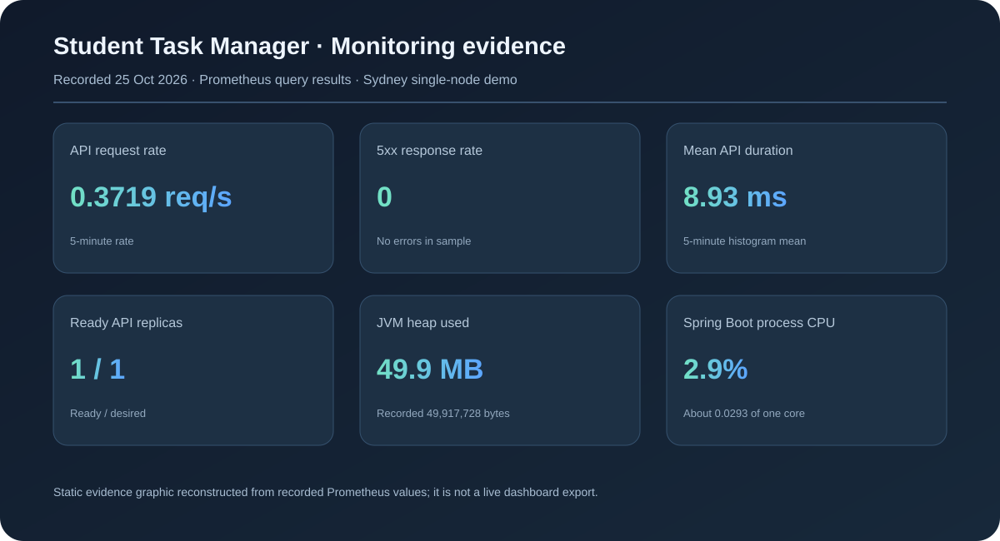

What we built
A browser task manager backed by a Spring Boot API and MySQL.
Student Task Manager · Kubernetes, Docker, Terraform and AWS
Myisha Siddiqui · 240905560 | Manan Bhasin · 240905492 | Rishabh Raj · 240905420
A browser task manager backed by a Spring Boot API and MySQL.
Pod scaling and recovery on a single-node K3s cluster in AWS Sydney.
Hand-configured servers are difficult to reproduce. A failed application process needs to recover without someone manually recreating its pod.
Package the service, describe infrastructure as code, and use Kubernetes to adjust API replicas and replace unhealthy pods.
Create, list, edit, complete and delete tasks in the browser. The Spring Boot API persists them in private RDS MySQL.
Autoscaling is at the pod layer on one EC2 host. This demo does not claim host-level high availability.
Docker packages the Java 21 service; Amazon ECR stores the image used by K3s.
Terraform defines the VPC, EC2 host, private database, ECR and scoped access.
HPA targets 60% pod CPU; Deployment and health probes recreate or restart failed pods.
SSM gives a private terminal and port-forward. Prometheus records API and cluster metrics.
No live Grafana walkthrough is included. The next slide shows a static summary reconstructed from the recorded Prometheus queries; it is not a dashboard screenshot.
4 / 7
The six-panel Grafana dashboard was deployed and its datasource/panels were verified. A PNG export was unavailable, so this summary uses the recorded query values.
5 / 7Deployment replaced a deleted API pod. A controlled liveness failure restarted the container and readiness returned UP.
CPU rose above the 60% target under load; the HPA added a pod and later returned to one replica after load stopped.
About $47.31/month on the modeled Sydney on-demand list-price assumptions, before credits, taxes, and variable usage. This is not an actual AWS bill.
Changing pod count on the same EC2 and RDS resources changes their provisioned hourly charges by approximately $0.
Container delivery, Terraform-defined AWS resources, HPA scale-up/down, and pod/process recovery.
Multi-node host recovery, automated image delivery after IAM/OIDC setup, persistent monitoring history, and authentication.
Conclusion: a working cloud-native application can recover and change pod capacity automatically, while infrastructure availability and cost depend on a broader design.
7 / 7 · See COST_ANALYSIS.md, FINAL_REPORT.md and evidence/DEMO_EVIDENCE.md.